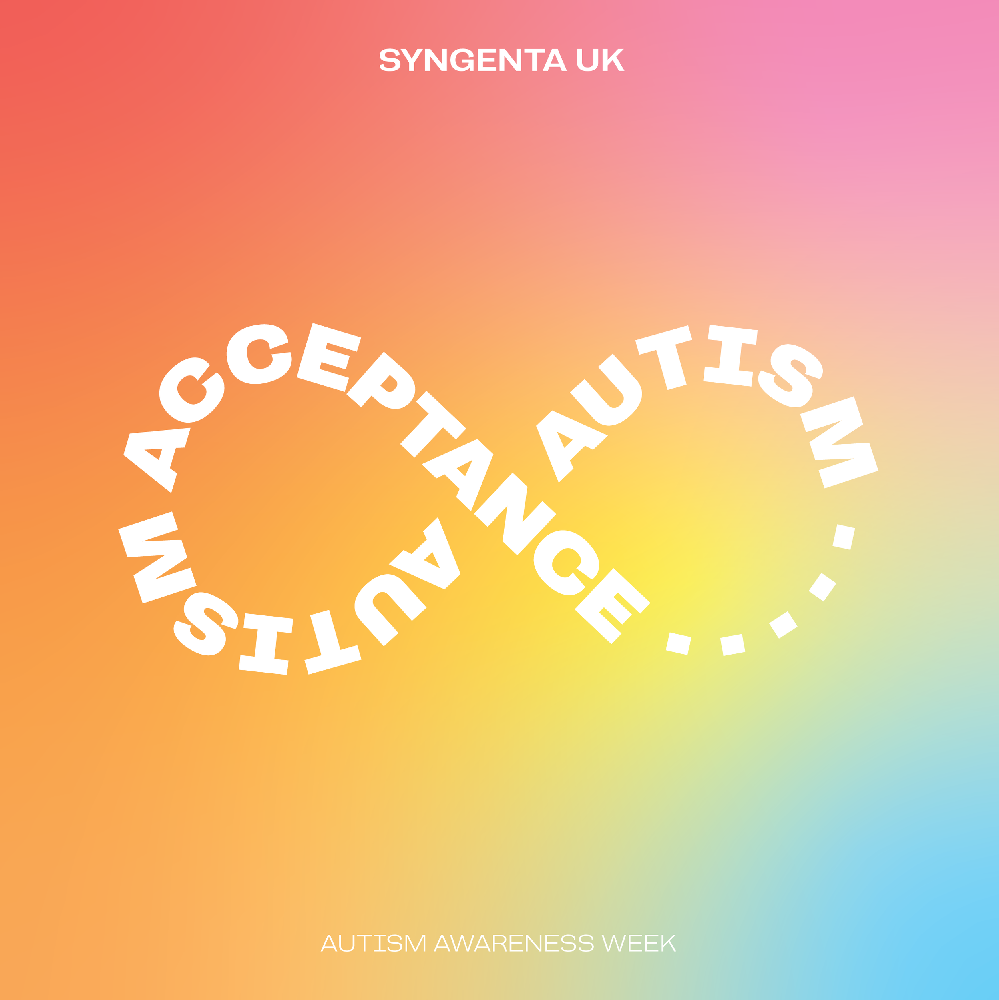
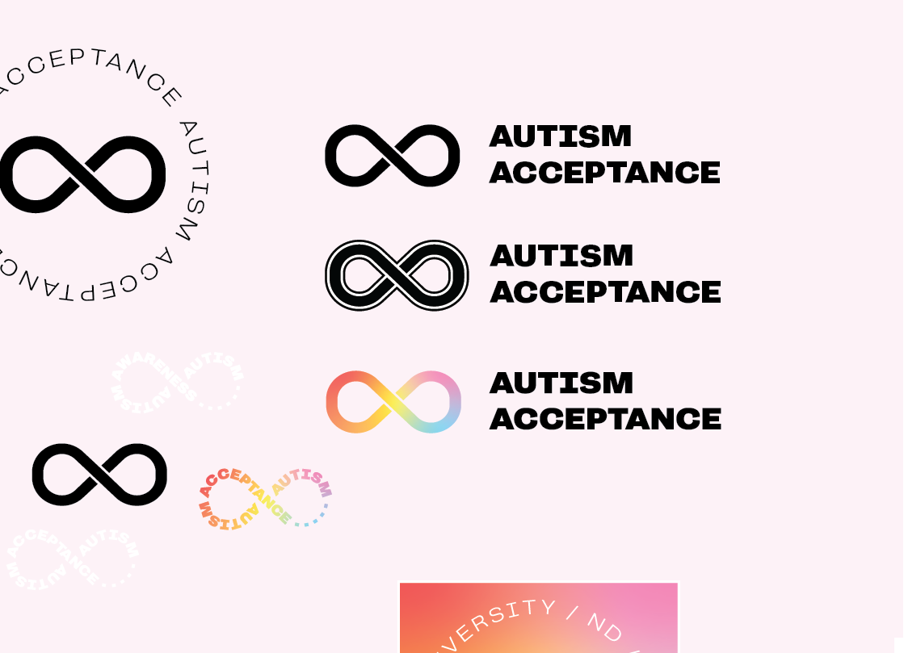
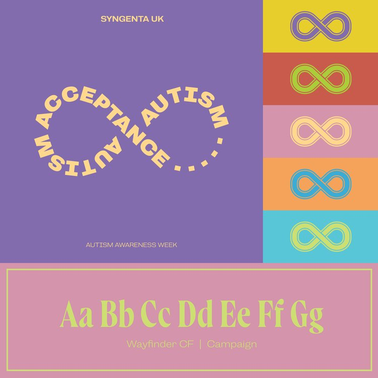
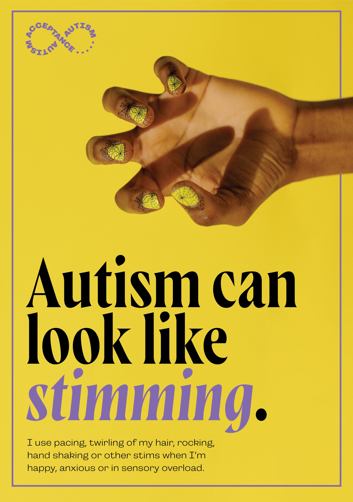
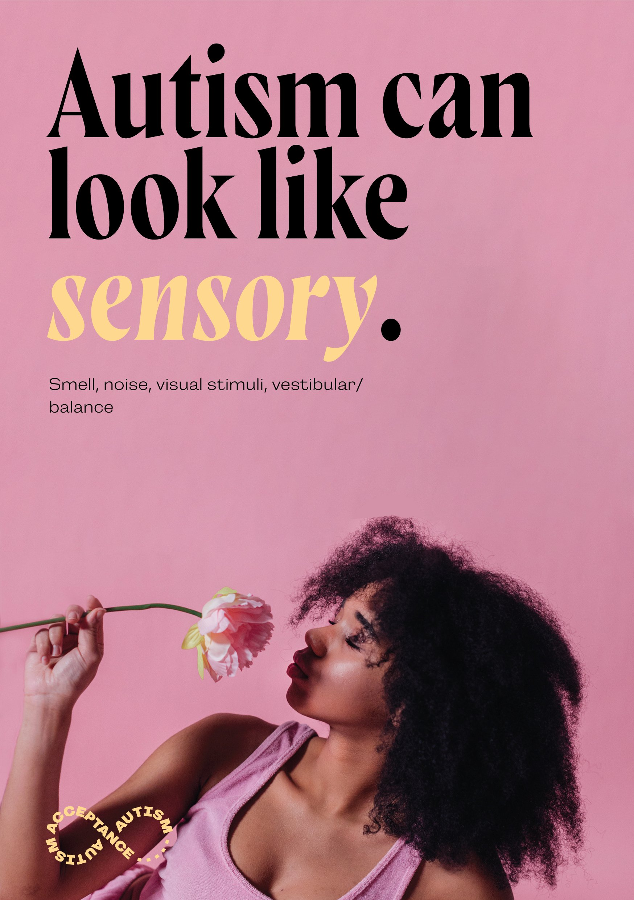
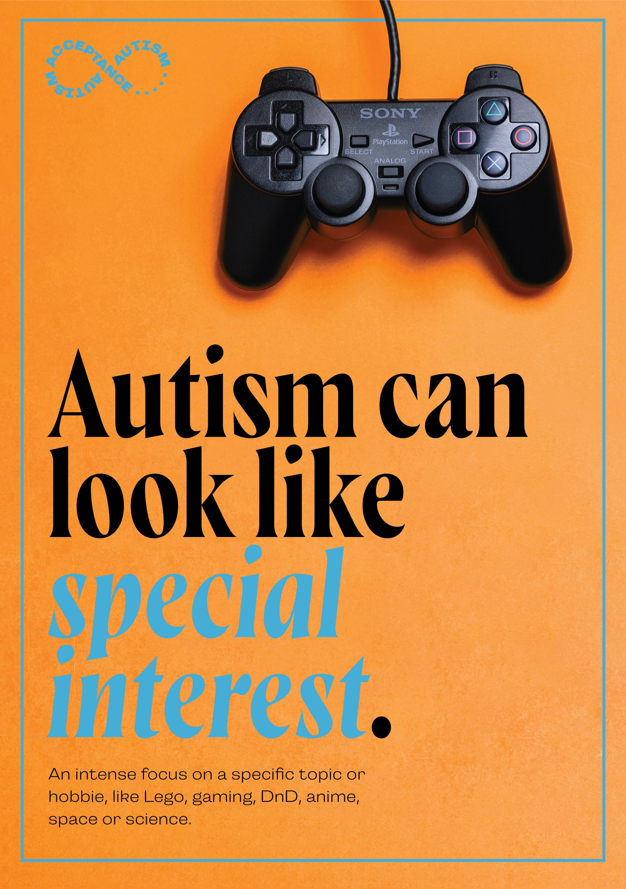
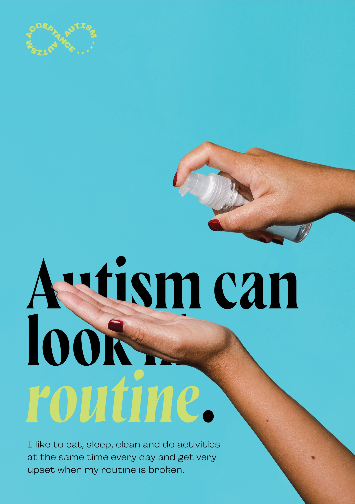
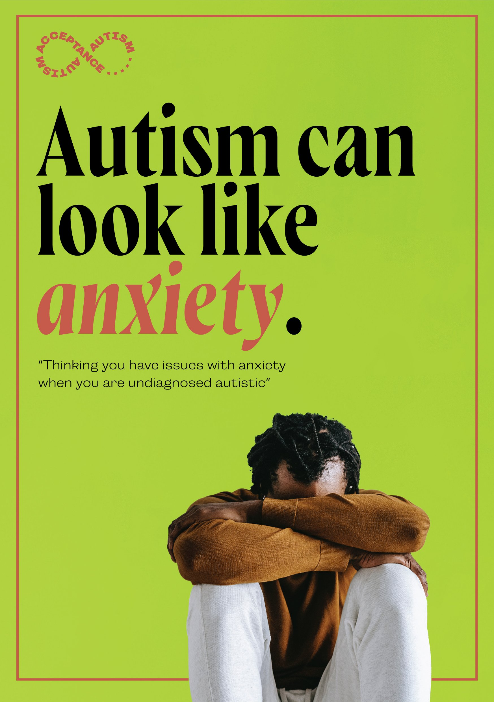

Project type: Branding & Poster Design
Role: Lead Designer
Key objectives: Build an inclusive brand and create eye-catching posters that raise awareness of Autism and encourage campus engagement.

Problem: Syngenta needed a clear, expressive brand to support their Autism Awareness Week campaign and better educate staff and visitors about what Autism can feel like.
Outcome: I developed a colourful, inclusive brand identity and designed five unique posters to reflect the internal experiences of autistic people, encouraging empathy and deeper understanding within the workplace.
The main goal was to create visuals that highlighted the diversity of autistic experiences. The branding had to balance professionalism and emotional impact while staying accessible and respectful. A key challenge was expressing complex internal feelings through minimal poster designs.
The infinity symbol, already a key part of Autism representation, was a natural starting point. I iterated on several concepts before landing on a rainbow-hued, typographic mark that reflected the spectrum of experiences and the individuality of autistic people.


Each poster visually represents a different internal sensation or difficulty that autistic individuals may experience. Rather than using heavy-handed explanations, I focused on mood, abstraction, and symbolic design to evoke emotion and relatability.





This project was deeply personal to me. I wanted to create something that not only looked good but truly helped people understand the often invisible experiences of Autism. Seeing the posters in situ and hearing the reactions was an incredibly rewarding moment.
"Amazing! This is great. Thank you so much Eden!" — Katrina, project manager
"These are so cool! They’ll definitely help us raise awareness on campus!" — Zarah, Syngenta team member